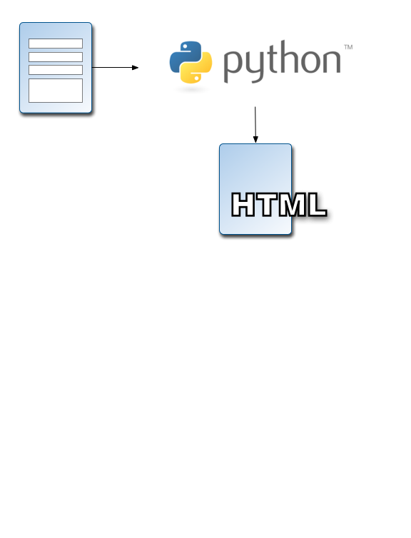
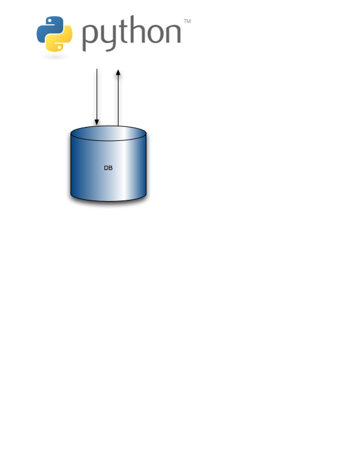
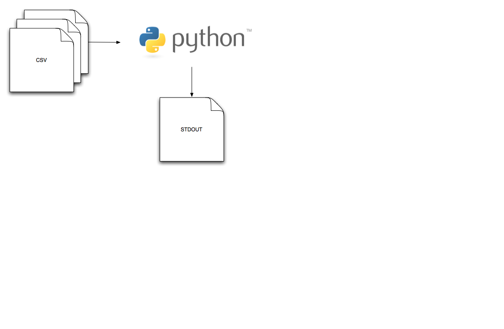
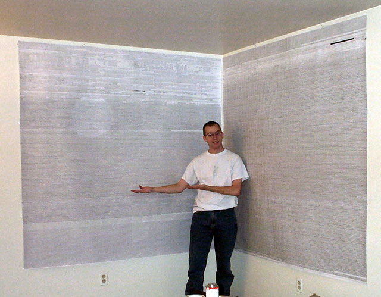
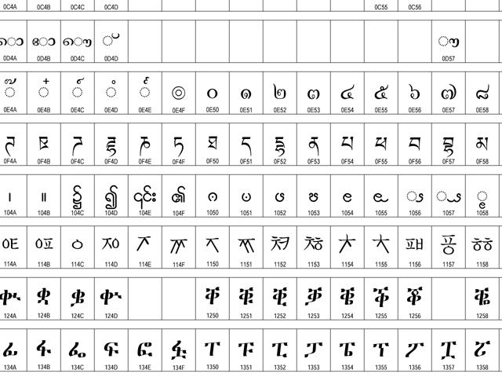
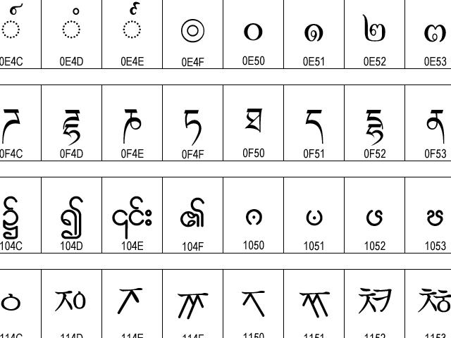

Unicode In Python, Completely Demystified
What does this mean?
UnicodeDecodeError: 'ascii' codec
can't decode byte 0xc4 in position
10: ordinal not in range(128)
- Never seen this exception?
- Seen it and sort of fixed it?
- This is a confusing error
- If you've never seen this before but want to write Python code, this talk is for you
- If you've seen this before and have no idea how to solve it, this talk is for you
- This is a really confusing error if you don't know what Python is trying to do for you; this talk aims to clarify
Overview
- The truth about strings in Python
- The magic of Unicode
- How to work with Unicode in Python 2
- fundamental concept
- example code
- Glimpse at Unicode in Python 3
- Ask lots of questions
- Corrections?
Why use Unicode in Python?
- handle non-English languages
- use 3rd party modules
- accept arbitrary text input
- you will love Unicode
- you will hate Unicode
Web application

[form input] => [Python] => [HTML]
- accepts input as text
- writes text to an html file
Interacting with a database

[read from DB] => [Python] => [write to DB]
- accepts input as text
- writes text to the database
Command line script

[text files] => [Python] => [stdout]
- accepts input as text
- writes text to stdout or other files
Let's open a UTF-8 file
Ivan Krstić
>>> f = open('/tmp/ivan_utf8.txt', 'r')
>>> ivan_utf8 = f.read()
>>> ivan_utf8
'Ivan Krsti\xc4\x87'
- Ivan Krstić is the director of security architecture at OLPC
- pretend you opened this in a desktop text editor (nothing fancy like vi)
and you saved it in UTF-8 format. This might not have been the default.
- now you are opening the file in Python
What is it?
>>> ivan_utf8
'Ivan Krsti\xc4\x87'
>>> type(ivan_utf8)
<type 'str'>
- a string of bytes!
- 1 byte = 8 bits
- A bit is either "0" or "1"
Text is encoded
Ivan Krstić
- This string is encoded in UTF-8 format
- An encoding is a set of rules that assign numeric values to each text character
- Notice the c with a hachek takes up 2 bytes
- Other encodings might represent ć differently
- Python stdlib supports over 100 encodings
- c with a hachek is part of the Croatian language
- each encoding has its own byte representation of text
ASCII
| char |
I |
v |
a |
n |
| hex |
\x49 |
\x76 |
\x61 |
\x6e |
| decimal |
73 |
118 |
97 |
110 |
- UTF-8 is an extension of ASCII
- created in 1963 as the American Standard Code for Information Interchange
- each character is 1 byte
- 128 possible characters
ASCII
| char |
K |
r |
s |
t |
i |
ć |
| hex |
\x4b |
\x76 |
\x72 |
\x74 |
\x69 |
nope |
| decimal |
75 |
118 |
114 |
116 |
105 |
sorry |
- ć cannot be encoded as ASCII
- d'oh!
built-in string types
(Python 2)
<type 'basestring'>
|
+--<type 'str'>
|
+--<type 'unicode'>
Important methods
s.decode(encoding)
- <type 'str'> to <type 'unicode'>
u.encode(encoding)
- <type 'unicode'> to <type 'str'>
The problem
Can't my Python text remain encoded?
Ivan Krstić
>>> ivan_utf8
'Ivan Krsti\xc4\x87'
>>> len(ivan_utf8)
12
>>> ivan_utf8[-1]
'\x87'
- isn't encoded text good enough? No decoding errors anywhere
- is the length of Ivan Krstić really 12?
- what happens if the text were encoded differently?
- is the last character really hexadecimal 87? Is that what I wanted?
Unicode is more accurate
Ivan Krstić
>>> ivan_utf8
'Ivan Krsti\xc4\x87'
>>> ivan_uni = ivan_utf8.decode('utf-8')
>>> ivan_uni
u'Ivan Krsti\u0107'
>>> type(ivan_uni)
<type 'unicode'>
Unicode is more accurate
Ivan Krstić
>>> ivan_uni
u'Ivan Krsti\u0107'
>>> len(ivan_uni)
11
>>> ivan_uni[-1]
u'\u0107'
Unicode, what is it?
- a way to represent text without bytes
- unique number (code point) for each character of every language
- supports all major languages written today
- defines over 1 million code points
- supports...
- European alphabets
- Middle Eastern right-to-left
- scripts of Asia
- technical math symbols
- et cetera
Unicode, the ideal
If ASCII, UTF-8, and other byte strings are "text" ...
...then Unicode is "text-ness";
it is the abstract form of text
Unicode is a concept
| letter |
Unicode Code Point |
| ć |
\u0107 |
- to save Unicode to disk you have to encode it
| Byte Encodings |
| letter |
UTF-8 |
UTF-16 |
Shift-JIS |
| ć |
\xc4\x87 |
\x07\x01 |
\x85\xc9 |
Unicode Transformation Format
UTF-16
>>> ab.encode('utf-16')
'\xff\xfeA\x00B\x00'
- variable byte representation
- 2 bytes (16 bits) to 4 bytes per code point
- optimized for languages residing in the 2 byte character range
Unicode Transformation Format
UTF-32
- fixed width byte representation, fastest
- 4 bytes (32 bits) per code point
- not supported in Python
Unicode chart
Ian Albert's Unicode chart
- this guy decided to print the entire Unicode chart
- 1,114,112 code points
- 6 feet by 12 feet
- 22,017 × 42,807 pixels
Unicode chart

Ian Albert's Unicode chart. Says it only cost him $20 at Kinko's but he was pretty sure they rang him up wrong.
Unicode chart 50 %

Unicode chart 100 %

Decoding text into Unicode
- It's mostly automatic
- this happens a lot in 3rd party modules
- Python will try to decode it for you
Python magic
>>> ivan_uni
u'Ivan Krsti\u0107'
>>> f = open('/tmp/ivan.txt', 'w')
>>> f.write(ivan_uni)
Traceback (most recent call last):
...
UnicodeEncodeError: 'ascii' codec can't encode character u'\u0107' in position 10: ordinal not in range(128)
Python magic, revealed
>>> ivan_uni
u'Ivan Krsti\u0107'
>>> f = open('/tmp/ivan.txt', 'w')
>>> import sys
>>> f.write(ivan_uni.encode(
... sys.getdefaultencoding()))
...
Traceback (most recent call last):
...
UnicodeEncodeError: 'ascii' codec can't encode character u'\u0107' in position 10: ordinal not in range(128)
Gasp!
THE DEFAULT
ENCODING FOR
PYTHON 2
IS ASCII
Just reset it?!
sys.setdefaultencoding('utf-8')
- can't I just put this in sitecustomize.py?
- No!
- your code will not work on other Python installations
- more trouble than it's worth
Solution
- Decode early
- Unicode everywhere
- Encode late
1. Decode early
Decode to <type 'unicode'> ASAP
>>> def to_unicode_or_bust(
... obj, encoding='utf-8'):
... if isinstance(obj, basestring):
... if not isinstance(obj, unicode):
... obj = unicode(obj, encoding)
... return obj
...
>>>
detects if object is a string and if so converts to unicode, if not already.
2. Unicode everywhere
>>> to_unicode_or_bust(ivan_uni)
u'Ivan Krsti\u0107'
>>> to_unicode_or_bust(ivan_utf8)
u'Ivan Krsti\u0107'
>>> to_unicode_or_bust(1234)
1234
3. Encode late
Encode to <type 'str'> when you write to disk or print
>>> f = open('/tmp/ivan_out.txt','w')
>>> f.write(ivan_uni.encode('utf-8'))
>>> f.close()
Shortcuts
codecs.open()
>>> import codecs
>>> f = codecs.open('/tmp/ivan_utf8.txt', 'r',
... encoding='utf-8')
...
>>> f.read()
u'Ivan Krsti\u0107'
>>> f.close()
Shortcuts
codecs.open()
>>> import codecs
>>> f = codecs.open('/tmp/ivan_utf8.txt', 'w',
... encoding='utf-8')
...
>>> f.write(ivan_uni)
>>> f.close()
Python 2 Unicode incompatibility
- some 3rd party modules incompatible
- some builtin modules are incompatible
Python 2 Unicode workarounds
- momentarily encode as UTF-8, then decode immediately
- csv documentation shows you how to do this
>>> ivan_bytes = ivan_uni.encode('utf-8')
>>> # do stuff
>>> ivan_bytes.decode('utf-8')
u'Ivan Krsti\u0107'
The BOM
- sometimes at beginning of files
- Byte Order Mark
- essential for UTF-16, UTF-32 files
- Big Endian (MSB first)
- Little Endian (LSB first)
- UTF-8 BOM just says "I am UTF-8"
Detecting the BOM
>>> f = open('/tmp/ivan_utf16.txt','r')
>>> sample = f.read(4)
>>> sample
'\xff\xfeI\x00'
- BOM can be 2, 3, or 4 bytes long
Detecting the BOM
>>> import codecs
>>> (sample.startswith(codecs.BOM_UTF16_LE) or
... sample.startswith(codecs.BOM_UTF16_BE))
...
True
>>> sample.startswith(codecs.BOM_UTF8)
False
Do I have to remove the BOM?
- maybe
- decoding UTF-16 removes the BOM automatically
- but not UTF-8
- unless you say s.decode('utf-8-sig')
- available since Python 2.5
How do you guess an encoding?
- There is no reliable way to guess an encoding
- BOM gives you a clue
- Content-type header usually contains charset=...
- chardet module tries
- UTF-8 is your best guess
Summary of problems
- default Python 2 encoding is 'ascii'
- files might contain a BOM
- not all Python 2 internals support Unicode
- You can't reliably guess an encoding
Summary of solutions
- Decode early, Unicode everywhere, encode late
- write wrappers for modules that don't like Unicode
- Always put Unicode in unit tests
- UTF-8 is the best guess for an encoding
- use the BOM to guess encodings
- or use chardet.detect()
Unicode in Python 3
- they fixed Unicode!
- <type 'str'> is a Unicode object
- separate <type 'bytes'> type
- all builtin modules support Unicode
- no more u'text' syntax
Unicode in Python 3
- open() takes an encoding argument, like codecs.open()
- default encoding is UTF-8 not ASCII
- Tries to guess the file encoding
- You will still need to declare encodings